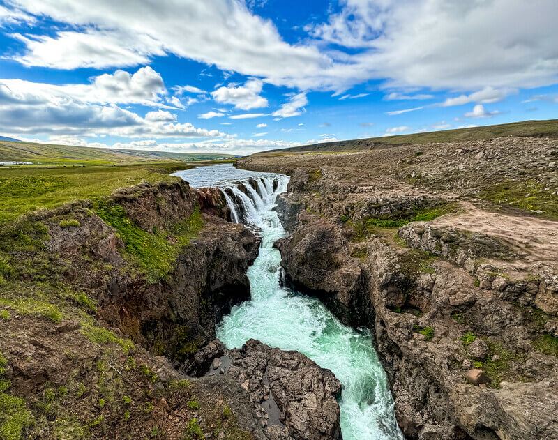

La primera parada que hicimos en la península de Vatnsnes fue Illugastadir, uno de los puntos más famosos de Islandia para ver focas. Se llega a un aparcamiento (que es de pago, hay máquinas) con baños, merenderos, etc. junto al mar y desde ahí parte un sendero por el que en unos 10 minutos llegas a donde descansan las seals. Depende del día verás más o menos. Nosotros contemplamos varias nadando en el mar algo lejos y un par más cerca que estaban tomando el fresco en la orilla, durmiendo la siestecita.
Hay que adentrarse en carretera de grava para conocer una roca única: el Rinoceronte de Islandia. Esta mole de 15 metros, según suba o baje la marea parece estar bebiendo del agua del mar. Muy cerca del aparcamiento, caminando ni cinco minutos hacia la izquierda hay un mirador desde el que se divisa perfectamente.
Si por el contrario paseas hacia la derecha, en unos 10 minutos llegarás a una playa de arena negra frente a la que vive una colonia de focas impresionante en la orilla contraria. Por si Illugastadir te había sabido a poco jaja. leyenda piedra rinoceronte: La leyenda cuenta que Hvítserkur era un troll que trataba de destruir el Monasterio de Thingeyrar y que fue sorprendido por el sol al amanecer, quedándose petrificado. De hecho, muy cerca se encuentra la Iglesia de piedra de de Thingeyrar, de 1860, donde siglos atrás se emplazaba el referido monasterio benedictino homónimo.
Cañón Kolugljúfur: Ya abandonando la Península de Vastnesfjall hallamos este vivo cañón con cascadas que era habitado por una hermosa troll. ¿Será ella quien trataba de destruir el templo? Lo cierto es que el desvío desde la carretera 1 es de apenas 10 minutos y sorprende que no haya casi nadie visitándolo porque el agua cayendo con fuerza sobre el cañón es brutal.